Dneska se bude jednat o mezi-díl, kam jsem nacpal věci, jenž se mi moc nevešly nikam jinam. Podíváme se detailněji na debugger a transporter a taky si rozebreme nevýhody Selfu jako jazyka, prostředí, ale i obecně principu používání prototypového programování.
Nebudu se věnovat tomu, jak přesně transporter funguje, to je možné vyčíst například z paperu Sifting Out the Gold: Delivering Compact Applications From an Exploratory Object-Oriented Environment. Zaměřím se spíš na uživatelskou stránku, tak jak je ukázána ve videu na stránce https://bluishcoder.co.nz/2015/11/19/exporting-self-objects-to-source-files-via-transporter.html.
Obrázkově je tahle podkapitola hrozně dlouhá, proto chci předem říct, že ve skutečnosti se neděje nic moc komplikovaného. Vytvořím anonymní objekt. Přidám ho v transporteru do nového modulu. Pak vytvořím slot v globální hierarchii, uložím do něj tento objekt a taky ho přidám do již vytvořeného modulu. Potom řeknu anotací transporteru, aby slot nenastavoval na defaultní hodnotu, ale „sledoval“ objekt co je v něm uložený. Pak všechno uložím na disk skrz dialog transporteru.
Začnu vytvořením naprosto jednoduchého objektu, obsahujícího jeden slot „a“ o hodnotě „1“.

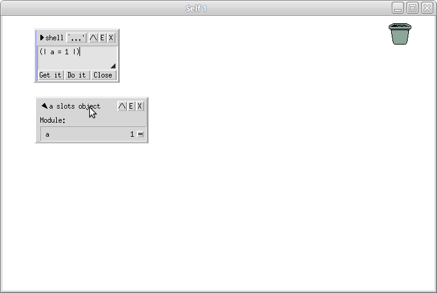
Na outliner potom kliknu prostředním tlačítkem (kolečkem) a vyberu z menu „Set module...“:
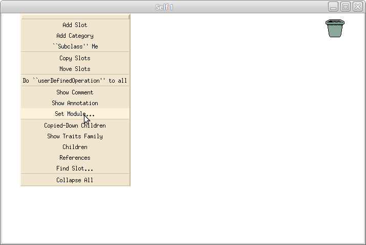
Nyní se bude objevovat série dialogů, kde se mě transporter poptá na různé informace. Jako první se ptá na sloty:
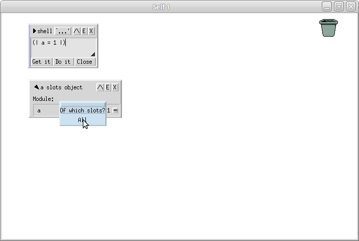
Chci všechny.
Dál se ptá na jméno modulu, do kterého objekt uložit.

Chci „other“, což vyvolá dialog s názvem. Já chci svůj modul pojmenovat „test“:

Dialog se mě nyní ptá zda chci modul vytvořit, nebo jsem se splet. Chci ho skutečně vytvořit:

Nechci ho udělat submodulem ostatních modulů, proto nechávám následující pole prázdné:
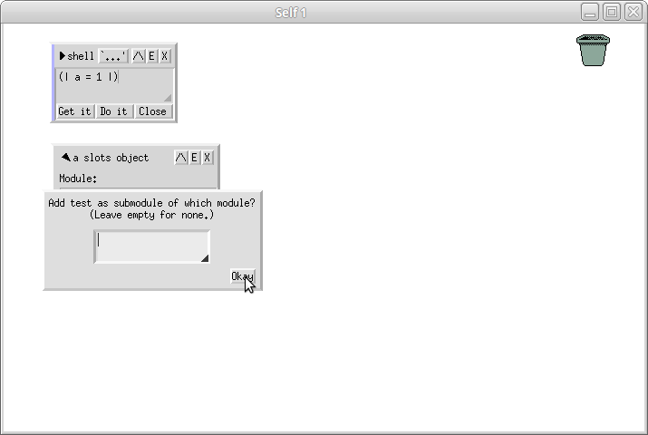
Ještě to znova potvrzuji:

Vybírám složku do které by se měl soubor uložit. Nechávám defaultní „applications“:
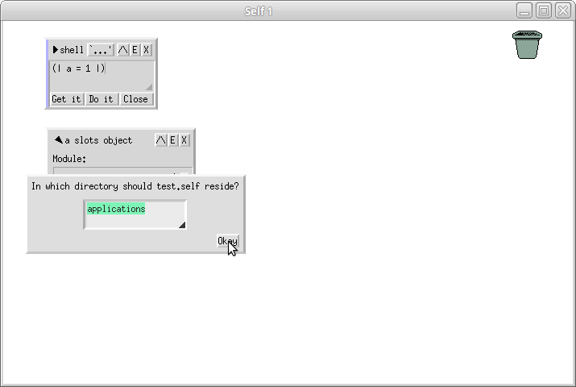
Můj objekt je nyní oficiálně součástí modulu, akorát se prostě jen tak vznáší ve vzduchu, což znamená, že by po načtení nešel moc dobře referencovat. Já ho chci uložit na cestu globals test. Otevřu si tedy outliner pro globals kliknutím na plochu kolečkem:
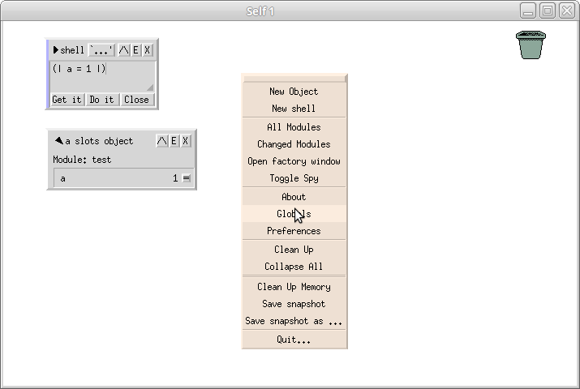
a otevřu si podsekci „applications“:

Vidím, že už v ní jsou čtyři aplikace. Kliknutím na nápis „applications“ prostředním se objeví kontextové menu, kde vyberu „Add Slot“:
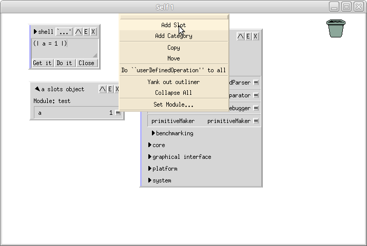
Z dialogu pro přidání slotu smažu defaultní text s nápovědou:

a nastavím slot na nil.
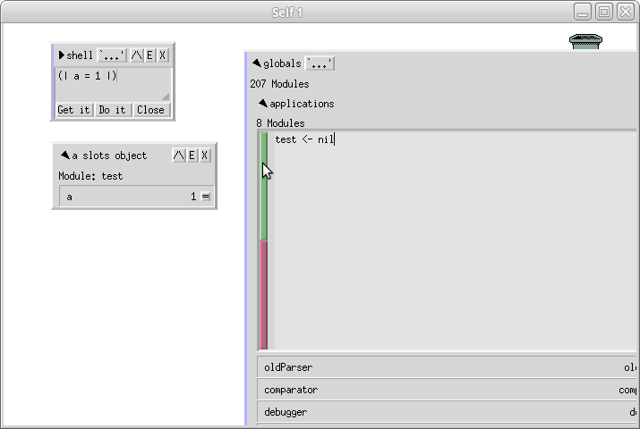
Uložím kliknutím na zelený obdélník, či stisknutím CTRL+enter.

Nyní místo nilu graficky přenesu referenci na můj anonymní objekt na ploše. Stejně tak bych ale mohl přijít do mého anonymního objektu, otevřít si v něm shell a zadat cosi jako globals test: self.

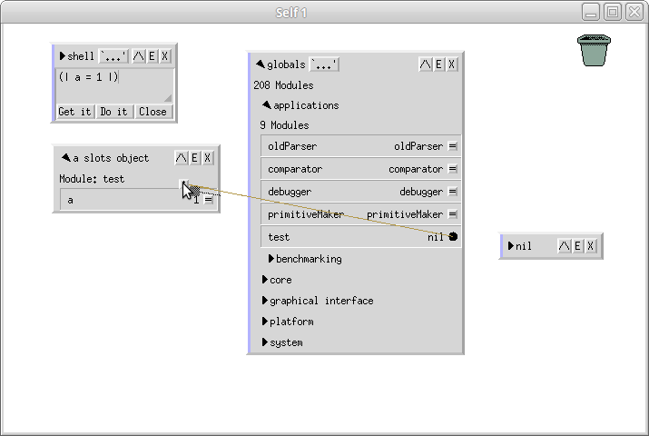

Slot globals test nyní ukazuje na můj objekt, neboli můj objekt nyní existuje na této cestě.
Nyní zbývá ještě nastavit modul pro tento slot kliknutím prostředním tlačítkem a vybráním „Set module“:
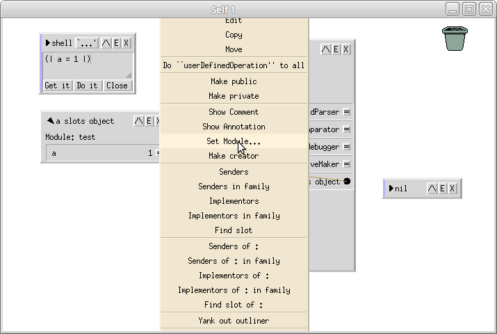
Zobrazí se podstatně větší menu, kde doscrolluju až dolu a vyberu other:
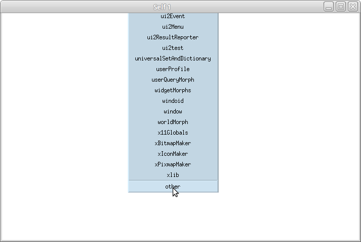
Tam znova zadám „test“:
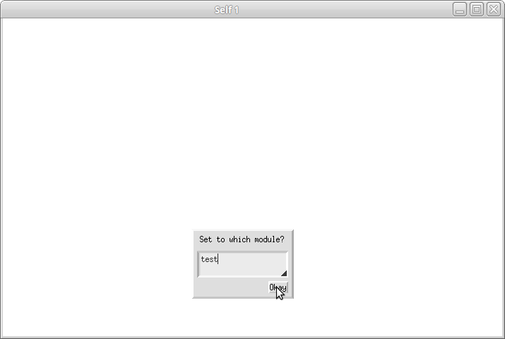
Abych teď nemusel jak blázen scrollovat zase nahoru, dvakrát kliknu na prázdnou plochu a vyberu že chci jít „home“:
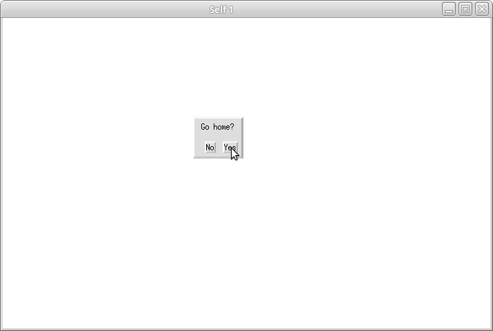
Což mě vrátí tam kde jsem byl. Nyní ještě potřebuji upravit anotaci slotu globals test, kliknu na něj tedy opět kolečkem a vyberu „Show Annotation“:

V nastavení modulu vyberu že chci „Follow“, nikoliv nastavovat slot na nil.
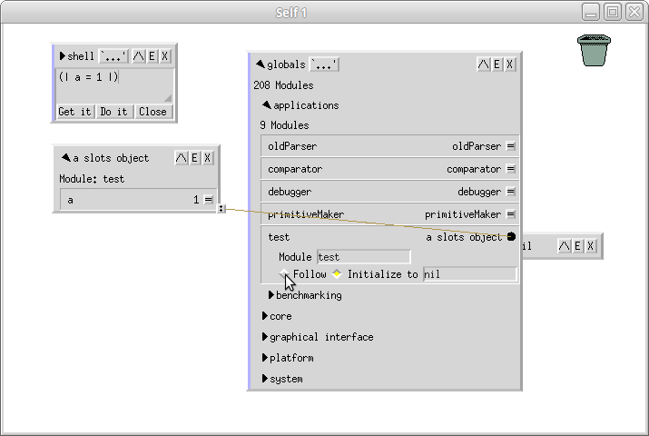

Nyní kliknu do prázdného místa na ploše prostředním a vyberu z menu „Changed Modules“:
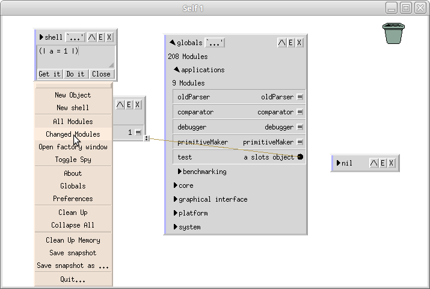
Zobrazí se mi dialog ukazující změněné moduly:
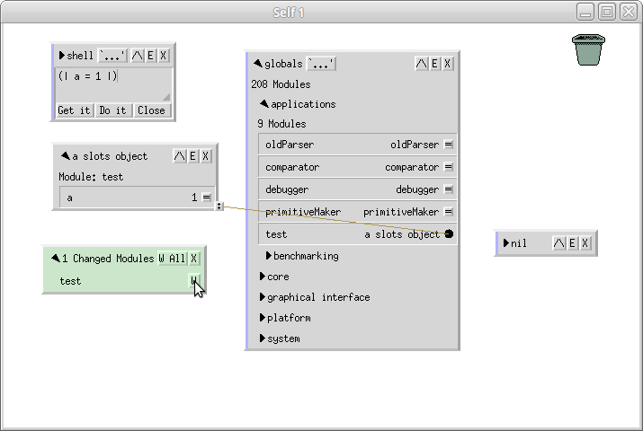
Ty můžu zapsat klikáním na tlačítka. Kliknu na tlačítko s nápisem „W“ vedle:
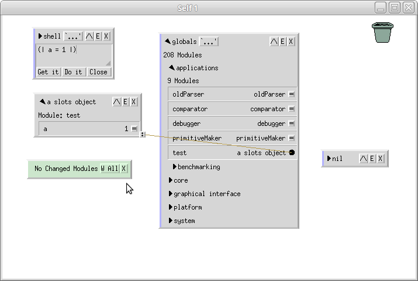
Tak a to je vše. Zdá se to jako hodně kroků, ale ve skutečnosti je to celé docela logické. Nyní se můžu podívat, že o úroveň výš (neptejte se mě proč) vznikl ve složce „objects/applications/“ soubor „test.self“:
''
'
Copyright 1992-2016 AUTHORS.
See the legal/LICENSE file for license information and legal/AUTHORS for authors.
'
[
"prefileIn" self] value
'-- Module body'
bootstrap addSlotsTo: bootstrap stub -> 'globals' -> 'modules' -> () From: ( | {
'ModuleInfo: Module: test InitialContents: FollowSlot'
test = bootstrap define: bootstrap stub -> 'globals' -> 'modules' -> 'test' -> () ToBe: bootstrap addSlotsTo: (
bootstrap remove: 'directory' From:
bootstrap remove: 'fileInTimeString' From:
bootstrap remove: 'myComment' From:
bootstrap remove: 'postFileIn' From:
bootstrap remove: 'revision' From:
bootstrap remove: 'subpartNames' From:
globals modules init copy ) From: bootstrap setObjectAnnotationOf: bootstrap stub -> 'globals' -> 'modules' -> 'test' -> () From: ( |
{} = 'ModuleInfo: Creator: globals modules test.
CopyDowns:
globals modules init. copy
SlotsToOmit: directory fileInTimeString myComment postFileIn revision subpartNames.
\x7fIsComplete: '.
| ) .
} | )
bootstrap addSlotsTo: bootstrap stub -> 'globals' -> 'modules' -> 'test' -> () From: ( | {
'ModuleInfo: Module: test InitialContents: FollowSlot\x7fVisibility: public'
directory <- 'applications'.
} | )
bootstrap addSlotsTo: bootstrap stub -> 'globals' -> 'modules' -> 'test' -> () From: ( | {
'ModuleInfo: Module: test InitialContents: InitializeToExpression: (_CurrentTimeString)\x7fVisibility: public'
fileInTimeString <- _CurrentTimeString.
} | )
bootstrap addSlotsTo: bootstrap stub -> 'globals' -> 'modules' -> 'test' -> () From: ( | {
'ModuleInfo: Module: test InitialContents: FollowSlot'
myComment <- ''.
} | )
bootstrap addSlotsTo: bootstrap stub -> 'globals' -> 'modules' -> 'test' -> () From: ( | {
'ModuleInfo: Module: test InitialContents: FollowSlot'
postFileIn = ( |
| resend.postFileIn).
} | )
bootstrap addSlotsTo: bootstrap stub -> 'globals' -> 'modules' -> 'test' -> () From: ( | {
'ModuleInfo: Module: test InitialContents: InitializeToExpression: (\'30.21.0\')\x7fVisibility: public'
revision <- '30.21.0'.
} | )
bootstrap addSlotsTo: bootstrap stub -> 'globals' -> 'modules' -> 'test' -> () From: ( | {
'ModuleInfo: Module: test InitialContents: FollowSlot\x7fVisibility: private'
subpartNames <- ''.
} | )
bootstrap addSlotsTo: bootstrap stub -> 'globals' -> () From: ( | {
'Category: applications\x7fModuleInfo: Module: test InitialContents: FollowSlot'
test <- bootstrap setObjectAnnotationOf: bootstrap stub -> 'globals' -> 'test' -> () From: ( |
{} = 'ModuleInfo: Creator: globals test.
'.
| ) .
} | )
bootstrap addSlotsTo: bootstrap stub -> 'globals' -> 'test' -> () From: ( | {
'ModuleInfo: Module: test InitialContents: FollowSlot'
a = 1.
} | )
'-- Side effects'
globals modules test postFileIn
V něm jsou nastaveny všechna možná metadata. Tento soubor můžu verzovat gitem a také načíst do nové image:
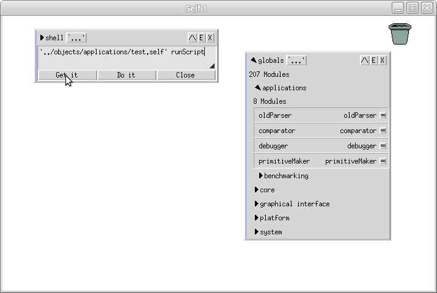
Což mi dá do ruky metadata o modulu a vedle v outlineru pro globals si můžete všimnout že se objevil nový slot „test“:
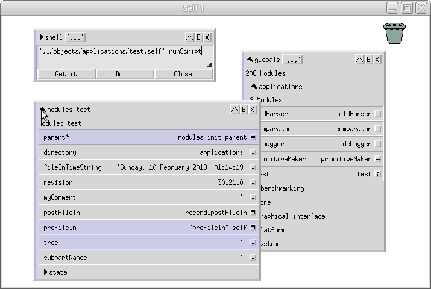
Ve kterém je skutečně můj objekt:

Self nabízí debugger smalltalkovského typu, ze kterého je možné interaktivně měnit kód. Krátká ukázka myslím řekne víc než tisíc slov.
V Shellu vytvořím jednoduchý objekt, který má slot „a“, kde je uložen kód, který by měl na standardní výstup vypsat hodnotu čísla „1“. Záměrně se ale upíši a místo zprávy „printLine“ pošlu pouze zprávu „printLin“, tedy bez „e“ na konci:
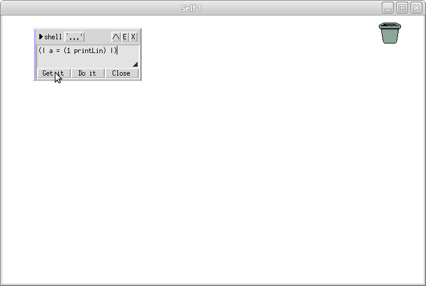
To mi „do ruky“ vloží objekt, který jsem popsal.

Můžu si zkontrolovat, že je to skutečně on tím že ho položím na plochu a rozbalím sloty:

V objektu otevřu podshell kliknutím na E vpravo v rohu a pošlu mu zprávu „a“:

Nyní kliknu na Get it, což by mělo kód provést (tedy vypsat do konzole jedničku) a zároveň mi do kurzoru umístit výsledek volání (také jednička). V kódu mám ale popsanou chybu, takže místo toho dostanu do ruky debugger:
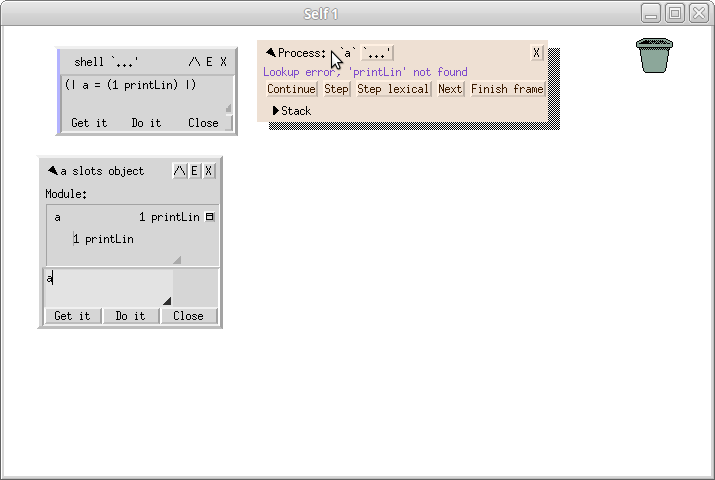
Debugger vypadá trochu podobně jako outliner. Krabička, která se dá rozklikávat. Zde je celá rozkliknutá:

Můžeme vidět celý stack trace, ale nejenom to, dá se s ním krásně interagovat. Například vlevo nahoře vidíme jedničku, což je receiver zprávy (selektoru). Na jedničku lze kliknout a dostaneme přímo objekt:

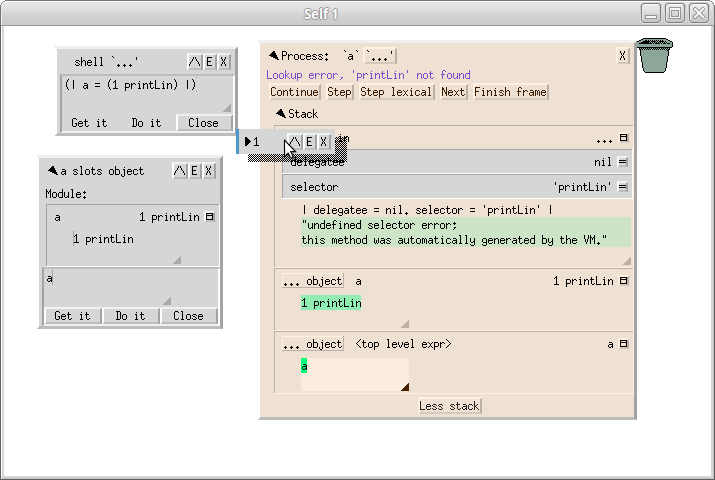
V případě jedničky to sice úplně nedává smysl, ale u jiných objektů může být velmi užitečné si je živě prozkoumat.
Z editoru lze také chybu hned opravit:
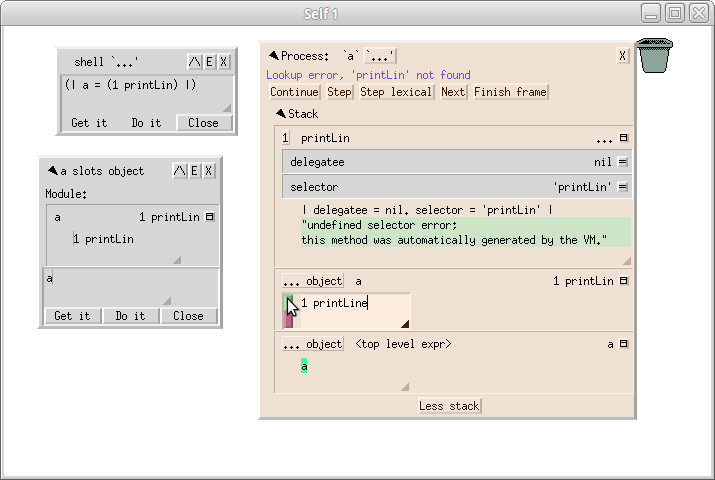
Po kliknutí na zelený čtvereček se upraví přímo kód, všimněte si outlineru vedle:
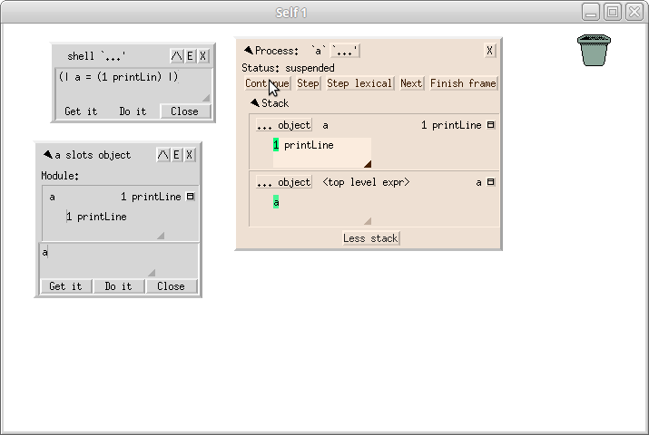
Nyní kliknu na continue a celý interpret bude pokračovat tam, kde by pokračoval normálně, kdyby k žádné chybě nedošlo, tedy do konzole se vypíše jednička a ta se mi taky octne v ruce:

Debugger nyní vypíše, že je mrtvý a minimalizuje se. Když nyní znova kliknu na Get it tlačítko, vše již napodruhé proběhne správně;

Z praktického hlediska je Self docela smutná kupka. Nejprve bych rád řekl, že je do velké míry použitelný, ale zdaleka ne tolik, aby to bylo přístupné pro začínající uživatele. Pokud něco budete řešit, zapomeňte na to, že vygooglíte řešení. S vysokou pravděpodobností jste nejspíš první, kdo má daný problém. A pokud ne, tak je stejně slušná šance, že problém je nevyřešen.
Self je 32 bitový program. Portace na 64 bitů je sice možná, ale netriviální a nikdo se do toho nehrne. Očekávám, že v příštích deseti letech se na tom asi nic nezmění.
Na jednu stranu je to docela nemilé, protože vás to omezuje na maximálně čtyřgigabajtové image, ale tenhle problém se dá vyřešit například použitím víc instancí a hlavně narazíte na problémy se vším možným daleko dřív. Například samotné ukládání image je docela pomalé už u velikostí kolem desítek megabajtů a gigabajtové velikosti by trvaly pravděpodobně celé minuty.
Prototypy jsou jednoduché na pochopení a spolu s delegaci (koukám se na tebe, javascripte!) nabízejí silný a efektivní mechanismus organizace kódu.
Mají ovšem jednu nevýhodu; jednou zapomenete na clone a přepíšete půlku systému.
Například s prototypovým dictionary se pracuje prostě tak, že si ho naklonujete a zapisujete do něj hodnoty. Pokud ovšem zapomenete provést klonování a rovnou píšete do dictionary, píšete zároveň do všech nových dictionary co budou vytvořeny kopírováním. To většinou vede k velmi rychlému pádu systému.
Self bohužel nenabízí žádnou možnost, jak se tomuhle bránit. Osobně bych se tomu ve svém jazyce rád vyvaroval zamykáním systémových objektů tak, aby bylo vynuceno klonování předtím, než je možné do nich zapsat. Nebo možná nějakým automatickým klonováním.
Selfovské je na tom se svými literály (zkrácený nativní zápis definice objektu) podobně, jako jazyky podporující pouze lambda funkce. Anonymní objekty jsou super, ale přeci jen člověk se snáze orientuje pokud může věci pojmenovat.
V Selfu je toto řešeno anotacemi, kde je možné nastavit jméno objektu, které se pak zobrazuje v outlinerech, nebo prostě umístěním objektu do patřičné hierarchie. Pokud umístíme objekt do cesty globals dictionary, tak je asi jasné, že se jedná o slovník.
Stojí za zamyšlení si to srovnat s na třídách založenými jazyky, které zpravidla trpí přesně opačným problémem, kde se snaží pojmenovat úplně všechno. Třída má svoje jasně dané jméno a instance má jméno proměnné kde existuje.
Co je pro lidi lepší a přirozenější? Aby měl objekt jasně dané jméno, nebo aby bylo jméno dané proměnou (či cestou) ve které je uložený?
Edit morphy nepodporují undo. Pešek. A všechny ostatní klávesové zkratky jsou nějaký subset části emacsu.
Bohužel nefunguje, protože používá nějaké prehistorické X bindingy. Řešení je nainstalovat si program autocutsel a pustit ho na pozadí.
Dokumentace prostě kromě toho co jsem už odkazoval není. Většinou se dá zeptat v konferenci, ale to není zrovna ideální.
To je trochu smutné z hlediska používání objektů samotných k uchovávání informací, neboť vás to nutí používat ordered kolekce.
Pokud nevíte co to je, tak vám to asi vadit nebude, přicházíte-li ale ze Smalltalku, tak to bude bolest.
Self používá jako kódování ISO 8859-1, takže nebere žádné znaky mimo toto (doslova se nedají napsat) a nic mimo toho ani neumí zobrazit.
Pokud by se s tím někomu chtělo zabývat, tak zde:
Outlinery jsou zajímavý koncept, který ale začne být otravný docela rychle. Proč je možné vidět například zde:
či ve své plné kráse zde:
Taky když zkoumáte nějakou komplexnější věc, tak končíte s desítkami outlinerů.
Osobně bych to doplnil browserem modulů ve stylu Smalltalku:
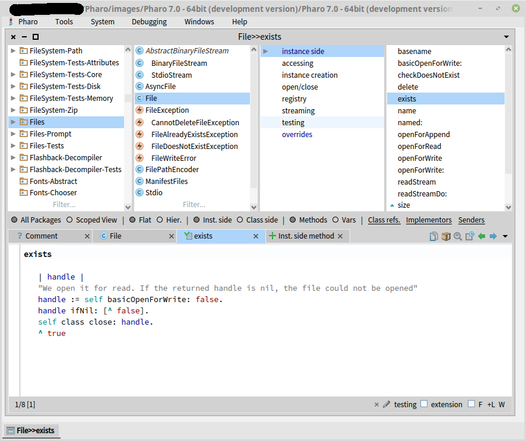
Self neumí zobrazovat obrázky v žádném z normálních formátů. Jediné co umí je nějaký Sunovský rastrový formát:
V posledním díle se podíváme na komunitu kolem Selfu, historii, budoucnost a dojde i na nějaké to filosofování.